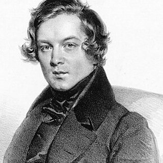

Compositeurs › Robert Schumann

Robert Schumann
Le romantique qui rêvait de devenir un grand pianiste : une blessure à la main a fait de lui l'un des grands compositeurs.
Sa vie
Il naît à Zwickau, en Allemagne, fils d'un libraire. Il étudie le droit pour faire plaisir à sa famille, mais l'abandonne pour le piano et prend des leçons avec Friedrich Wieck à Leipzig.
Vers 1832, une blessure à un doigt de la main droite met fin à son rêve de carrière de pianiste : il se consacre alors à la composition et à la critique musicale, et fonde en 1834 une revue musicale où il fera connaître de jeunes talents comme Brahms.
En 1840, il épouse Clara Wieck, fille de son professeur et grande pianiste, après un procès contre le père de celle-ci. Dans ses dernières années, il souffre de graves troubles mentaux et meurt dans un asile à Endenich, près de Bonn.
Portrait : Josef Kriehuber (1839), domaine public, sur Wikimedia Commons.

Anecdotes
- Les Scènes d'enfants (1838) ne sont pas de la musique pour enfants mais des souvenirs d'enfance d'un adulte : la plus célèbre est « Träumerei » (Rêverie).
- L'Album pour la jeunesse (1848) est né comme cadeau d'anniversaire pour sa fille Marie : il est plein de courtes pièces pour les jeunes pianistes, comme « Le gai laboureur » et « Le cavalier sauvage ».
- Il signait ses articles avec deux personnages inventés : le fougueux Florestan et le rêveur Eusebius.
Au piano
- Chaque pièce a un caractère précis, donné par son titre : avant de jouer, imagine la scène.
- Dans « Le gai laboureur », la mélodie est à la main gauche : elle doit sonner plus fort que les accords de la droite.
- Cherche un son chaud et chantant, même dans les pièces simples.
Ses morceaux à apprendre 4 morceaux

Apprends-le note par note avec Piano Learning
Avec « Attends la note », le morceau s'arrête jusqu'à ce que tu joues la bonne touche, sur ton téléphone ou sur ton propre piano (l'appli t'écoute). Mains séparées, vitesse dès 10 %, partition toujours sous les yeux.
Télécharge-la gratuitement sur Google Play Gratuit comme La Campanella, la Marche turque, Jingle Bells et Frère Jacques. Des centaines d'autres morceaux avec un seul achat, sans abonnement.